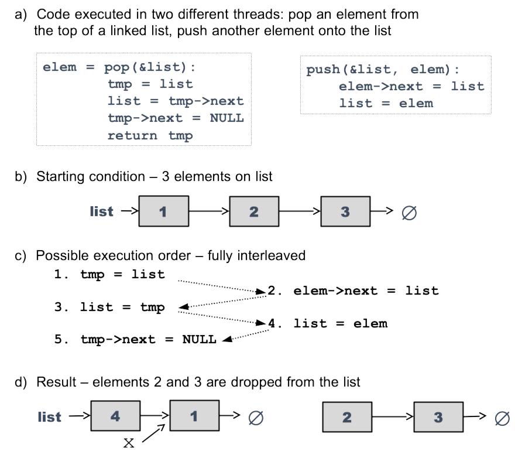
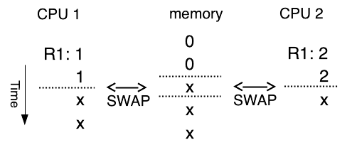
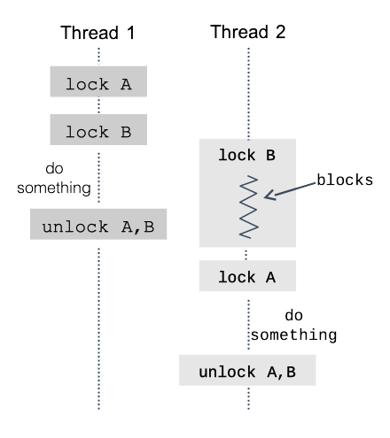
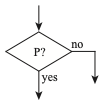
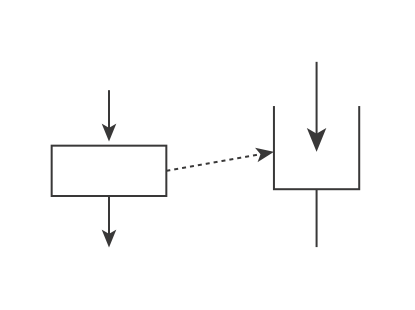
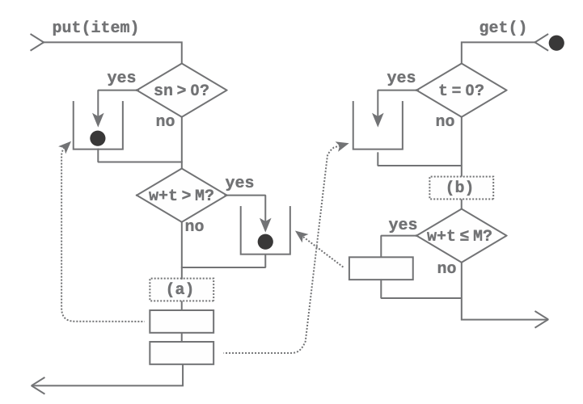
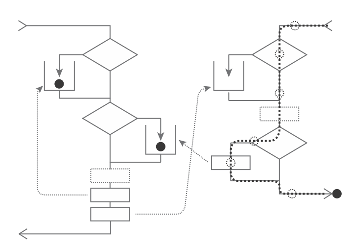
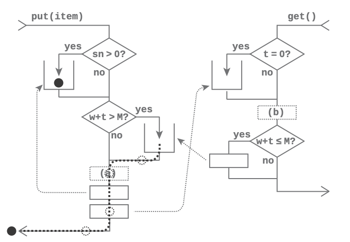

Synchronization – Safety & Sequencing - FROM PETER’s BOOK
Contents
30. Synchronization – Safety & Sequencing - FROM PETER’s BOOK#
30.1. Problem Introduction#
One of the key responsibilities of an operating system is that of synchronization—handling nearly simultaneous events in a reasonable way, and providing mechanisms for user applications to do so as well.
In [ch3:lst:bank]{reference-type=”autoref”
reference=”ch3:lst:bank”} we see a simplified example of a program to
maintain a bank account balance at the Bank of Lost Funds. When running
on a single CPU, the deposit function is trivially correct: after it
completes execution, the value of balance will be sum greater than
it was before the function was invoked.
In [ch3:fig:badbank]{reference-type=”autoref”
reference=”ch3:fig:badbank”}, however, we see one possible result when
this function is invoked by two threads nearly simultaneously. In this
case thread 1 is interrupted after it has read the current value of
balance, but before it could store the new value back to memory. The
result is that the update performed by thread 2 is lost, being
over-written by thread 1’s computation, and after depositing a total of
$150 to the account we have a final balance of $50.
money_t balance;
function deposit(money_t sum) {
balance = balance + sum;
}
30.2. Race Conditions and Mutual Exclusion#
Such errors are referred to as race conditions, because the result depends on a “race” between threads, where it is unknown which will execute some piece of code first.
 {#ch3:fig:badbank width=”90%”}
{#ch3:fig:badbank width=”90%”}
{#fig:sync:linked width=”85%”}
Another example of such a race condition is shown in [fig:sync:linked]{reference-type=”autoref” reference=”fig:sync:linked”}(a) and (b), which shows a simple linked list, along with the code to use it as a push-down stack by pushing and popping elements. In [fig:sync:linked]{reference-type=”autoref” reference=”fig:sync:linked”}(c) and (d) we see what happens when a push and a pop conflict with each other, causing the list to become disconnected; in this case the right-hand side of the list is effectively “lost”, with potentially disastrous consequences.
The most insidious aspect of each of these race conditions is that they occur in otherwise bug-free code; in particular, there is no amount of testing which is guaranteed to find them.
mutex_t n = mutex_create()
mutex_lock(n)
mutex_unlock(n)
mutex_destroy(n)
The solution to race conditions is fairly obvious, although not always
simple: we identify all the cases where data must be protected against
simultaneous modification or access, and prevent this from occuring1.
To do this we create an object called a mutex (see
[fig:sync:fakemutex]{reference-type=”autoref”
reference=”fig:sync:fakemutex”}) which has the ability to guard against
simultaneous access. This object has two methods, lock and unlock,
and the following properties:
Given a mutex `m`, once some thread T1 returns from `m.lock()`, no other
thread T2 will return from `m.lock()` until T1 enters `m.unlock()`.
If thread T1 is holding mutex [m](m){.uri} (i.e. it has entered and
returned from [m.lock](m.lock){.uri} and T2 is waiting for [m](m){.uri}
(it has entered but not returned from [m.lock()](m.lock()){.uri}), then
when T1 enters [m.ulock()](m.ulock()){.uri}, T2 (or some other thread
blocked on [m](m){.uri}) will "promptly" return from
[m.lock()](m.lock()){.uri}.
(these properties are also termed mutual exclusion—hence the name mutex—and progress, and are two of the three formal requirements for a solution to the critical section problem.)
When thread T1 returns from m.lock(), we often say that T1 has
acquired the mutex m, or that it is holding it; when T1 invokes
m.unlock() it releases the mutex. Note that other threads are free
to call the lock method on m while m is held by T1; however none
of those threads will return from the call until the mutex is
released. If T1 were to hold the mutex for a long time, this would delay
the other threads; if it fails to ever release the mutex (e.g. due to
raising an exception before the call to unlock()) it would be a
serious bug, typically causing the program to freeze.
We can now write a thread-safe version of our bank account object, as seen in [fig:sync:safebank]{reference-type=”autoref” reference=”fig:sync:safebank”}. It avoids the race condition described in the beginning of the chapter by using a per-instance mutex to guard operations which modify the balance. By doing this we have made the modification of the balance atomic2, at least with respect to any other code which properly locks the mutex—i.e. it appears to happen as a single operation, with any other modification happening either before or after, but not simultaneously.
object account is:
mutex m
int balance
method deposit(int amount):
m.lock()
balance = balance + amount
m.unlock()
method get_balance():
return balance
object account is:
mutex m
int balance_dollars
int balance_cents
method deposit(int dollars, int cents):
m.lock()
balance_cents = balance_cents + cents
if balance_cents >= 100:
balance_dollars = balance_dollars + 1
balance_cents = balance_cents - 100
balance_dollars = balance_dollars + dollars
m.unlock()
method get_balance(out &d, out &c): // d,c are outputs
m.lock()
d = balance_dollars
c = balance_cents
m.unlock()
In [fig:sync:safebank]{reference-type=”autoref” reference=”fig:sync:safebank”} we can (on most computers) safely read the balance without locking the mutex, because the hardware can usually be trusted to perform a read of a single integer atomically. Another way to state this is that the object is in a safe state at all times—it changes atomically from one safe state to another. In [fig:sync:safebank2]{reference-type=”autoref” reference=”fig:sync:safebank2”} we see a bank account object with a slightly more complex state, representing integer dollars and cents separately; in this case reading the object state in the middle of an update could give incorrect results, e.g. showing \(balance\_cents>99\). (more serious problems such as null pointer errors can occur when accessing complex data structures such as linked lists or trees during an update) To prevent this, the code in [fig:sync:safebank2]{reference-type=”autoref” reference=”fig:sync:safebank2”} locks the object when observing its state, so that it only sees the consistent state found after an update has fully completed.
30.2.1. Review Questions#
30.3. Implementing Mutexes#
So mutexes are great, but how do they actually work? In [fig:sync:fakemutex]{reference-type=”autoref” reference=”fig:sync:fakemutex”} we saw a hypothetical system call interface which allows us to create, destroy, lock and unlock mutexes. Internal to the OS we can assume that each mutex has a state—locked or unlocked—and a list of threads waiting for the mutex. If a process calls mutex_lock{.uri} on an unlocked mutex, the mutex is marked as locked and mutex_lock{.uri} returns immediately. If the mutex is locked, then the call is treated almost exactly like waiting for I/O: the OS puts the thread on the mutex wait queue, and then switches to the next active thread. When mutex_unlock{.uri} is called, the OS takes the first thread (if any) off the queue and puts it back on the active list.
So now that we know exactly how our mutex system calls are supposed to behave, how do we implement them? In addition, how does the operating system protect its own data structures, which (in e.g. Linux and Windows) reside in a single address space and are accessed from not only multiple user processes (via system calls) and kernel threads, but also from exception handlers for e.g. page faults and hardware interrupts?
On a single-processor system this is fairly straightforward. Code runs in a straight line unless it is interrupted by a hardware interrupt or an exception such as a page fault, so all we need to do is to (a) disable interrupts, and (b) ensure that the operating system code and data (or at least the code and data needed for mutexes) is always mapped into physical memory, to avoid page faults.
(Note that user-level code is not allowed to disable interrupts, as doing so for more than a brief period is likely to crash the machine.)
``` {#lst:sync:osmutexA float=”” basicstyle=”\ttfamily\footnotesize” caption=”Simple single-CPU kernel mutex. The ``locked’’ flag and list of waiting processes are guarded by disabling interrupts” label=”lst:sync:osmutexA”} structure mutex: bool locked = False // guarded by IRQ disable queue waitlist // waiting threads (also guarded)
mutex_lock(mutex m): disable_interrupts() if not m.locked m.locked = True enable_interrupts() else: pause(current_process) // remove it from active list m.waitlist.add(current_process) enable_interrupts() sleep() // wake here when mutex acquired
mutex_unlock(mutex m): disable_interrupts() if waitlist is empty: m.locked = False enable_interrupts() else local next_thread = m.waitlist.pop_from_head() enable_interrupts() wake(next_thread) // add it to the active list
In [\[lst:sync:osmutexA\]](#lst:sync:osmutexA){reference-type="autoref"
reference="lst:sync:osmutexA"} we see a mutex implementation based on
this. We assume the same context-switching structure used in
[\[fig:ch2:serialin2\]](#fig:ch2:serialin2){reference-type="autoref"
reference="fig:ch2:serialin2"} in the previous chapter, with a thread
control structure containing fields such as the saved stack pointer as
well as links for creating lists:
- [current](current){.uri} points to the currently running thread
- [active](active){.uri} is a list of other threads ready to run
- [sleep](sleep){.uri} pops the next runnable thread from
- [active](active){.uri}, assigns it to [current](current){.uri}, and
switches to it[^3].
- [wake](wake){.uri} appends a thread to the active list so that it can
run again.
On a single-CPU system the fields of the mutex structure are protected
from race conditions, as no interrupts will occur during modifications.
We can see that our mutex requirements will be met, by noting that:
- the first thread to call [lock(m)](lock(m)){.uri} will set
[m.locked](m.locked){.uri} to true and return immediately.
- if another thread calls [lock(m)](lock(m)){.uri} before the mutex is
unlocked, it will queue itself on [m.waitq](m.waitq){.uri} and sleep.
- when [unlock(m)](unlock(m)){.uri} is called, if there are any threads
waiting then the first one will be woken up (and thus continue from its
- [sleep](sleep){.uri} call and return from [lock(m)](lock(m)){.uri} the
next time it is scheduled), and the mutex will remain locked;
- if no threads are waiting the mutex will be unlocked.
::: gsidebarN
16 An exercise for the reader - many textbooks describe Dekker's and
Peterson's algorithms for mutual exclusion, which use normal memory load
and store instructions to provide mutual exclusion. Try implementing
Peterson's algorithm as described in Wikipedia, with two threads each
looping N times, each time (a) entering the critical section, (b)
incrementing a counter, and (c) leaving the critical section. For large
N (e.g. $10^7$) does the counter always get incremented 2N times? Why
not? (feel free to ask in class if you don't find the answer)
:::
On a multi-core system the problem is more complicated, however, as the
CPU cores are all executing simultaneously, accessing the same memory,
whether interrupts are enabled or not. Implementing a mutex on a
multi-core system requires coordinating via the memory system shared
between all the CPUs, using special instructions which are guaranteed to
execute uninterrupted by instructions running on any of the other CPU
cores.
``` {#lst:sync:spinlock float="" caption="Spinlock implementation. If the lock contains 0, it is unlocked; if 1, then it is locked, in which case a second thread (or CPU) trying to acquire it will ``spin'' (i.e. loop) until it is released." label="lst:sync:spinlock"}
typedef int spinlock_t
spin_lock(spinlock_t *lock_addr):
register r = 1
while r == 1:
SWAP r, lock_addr
spin_unlock(spinlock_t *lock_addr):
*lock_addr = 0
There are a number of specialized CPU instructions which are typically provided to implement mutual exclusion; we will consider one of them, the atomic SWAP instruction4:
SWAP register, address
This instruction swaps the contents of a register with the data in a specified memory location, and unlike normal instructions it is guaranteed to do so atomically. In other words, no matter how many CPU cores are trying to swap with the same memory location simultaneously, one of them will do so first, another second, and so on, and every CPU will see the location change values in the same order.
This is in contrast to normal load/store instructions, where different CPU cores may see differences in the order in which changes occur. This is not surprising when you consider that each CPU is handling multiple instructions at once, possibly out of order, and writing into cache lines which are only later flushed to main memory. For instance, if CPU 1 writes to cache line A and then to cache line B, they could conceivably be flushed to memory in the opposite order, so while CPU 1 sees A written before B, other CPUs see B written before A. Although it’s possible to achieve consistent ordering—that’s what atomic instructions do—it’s much slower.
 {#fig:sync:spinlockop
width=”60%”}
{#fig:sync:spinlockop
width=”60%”}
The SWAP instruction allows us to implement what is called a spinlock, as shown in [lst:sync:spinlock]{reference-type=”autoref” reference=”lst:sync:spinlock”}. An example of its operation is shown in [fig:sync:spinlockop]{reference-type=”autoref” reference=”fig:sync:spinlockop”}: in effect the 0 value is treated as a token that is passed between waiting CPUs (or threads) and the lock memory location. This lock is extremely simple, and by making use of the hardware-provided atomic SWAP instruction, it guarantees mutual exclusion. However as we see in the figure it can be (a) unfair, as it does not respect the order in which CPUs begin to wait for the lock, and (b) inefficient, as CPUs 2 and 0 are unable to perform any work while waiting. We therefore use spinlocks to guard very short pieces of code, and then use these pieces of code to construct efficient and well-behaved primitives for applications to use.
structure mutex:
int spinlock
bool free = True // guarded by spinlock
queue waitlist // waiting threads, guarded by spinlock
mutex_lock(mutex m):
disable_interrupts()
spin_lock(&m.spinlock)
if m.free
m.free = False
spin_unlock(&m.spinlock)
enable_interrupts()
else:
pause(current_process) // remove it from active list
m.waitlist.add(current_process)
spin_unlock(&m.spinlock)
enable_interrupts()
sleep() // wake here when mutex acquired
mutex_unlock(mutex m):
disable_interrupts()
spin_lock(&m.spinlock)
if waitlist is empty:
m.free = True
spin_unlock(&m.spinlock)
enable_interrupts()
else
local next_thread = m.waitlist.pop_from_head()
spin_unlock(&m.spinlock)
enable_interrupts()
wake(next_thread) // add it to the active list
A spinlock-enhanced version of the mutex in [lst:sync:osmutexA]{reference-type=”autoref” reference=”lst:sync:osmutexA”} is shown in [lst:sync:osmutex]{reference-type=”autoref” reference=”lst:sync:osmutex”}; it is identical except for the addition of a spinlock, which is used in addition to disabling interrupts to guard the locked{.uri} flag and wait queue.
This implementation retains almost all the efficiency of the single-CPU version, as the spinlock is never held for more than a few instructions, limiting the length of time that other CPUs are stuck busy-waiting5. Unlike the basic spinlock, this mutex is also fair, as waiting threads will be queued and acquire the mutex in FIFO order. (at most, any unfairness in the underlying spinlock mechanism will effect the order in which threads go onto the list, not how many turns they get holding the mutex.)
More formally, what we mean by “fair” in this case is bounded waiting—i.e. no thread can be “starved” while other threads repeatedly acquire and release the mutex. (this is the third requirement for solutions to the critical section problem)
In particular, if thread A is waiting for the mutex, bounded waiting means that another thread B cannot acquire and then release it many times while A is still waiting. (note that spinlocks cannot guarantee this property, as any waiting thread can acquire the lock, regardless of how long it has been waiting.) If multiple threads (on separate CPUs) call mutex_lock{.uri} at once, the spinlock will determine what order they will be added on the queue, but the FIFO ordering of the queue ensures that if a thread acquires the mutex and releases it, when it tries to lock the mutex again it will go to the tail of the line.
30.3.1. Review Questions#
{#fig:sync:badswap width=”70%”}
30.4. The Bounded Buffer Problem and Semaphores#
Mutexes can be used to prevent certain orders of execution—e.g. multiple threads executing certain operations at the same time—but what if we want to cause a certain order of execution? (for instance, waking a thread which is waiting for keystroke input.) We refer to this as synchronization, and to the primitives which are used for this purpose as synchronization primitives.
To begin we’ll examine a “classic” or pedagogical6 synchronization problem frequently used as an example of multi-threaded programming: the Bounded Buffer Problem, which may be defined as follows:
An object `buffer` has methods `put` and `get`.
Successive calls to `buffer.put(item)` insert items into the buffer.
Successive calls to `item = buffer.get()` remove items from the buffer
in the same order as they were inserted.
If the buffer contains no items, `buffer.get()` will block until an item
is inserted.
If the buffer contains N items, `buffer.put()` will block until an item
is removed.
We can start with a single-threaded version of the bounded buffer. In this case parts 3 and 4 of the definition must be modified, as no other thread will arrive to insert or remove an item; instead we will return NULL if no item is available, and ERROR if the buffer is full, as seen in [fig:sync:bb]{reference-type=”autoref” reference=”fig:sync:bb”}.
list buffer
put(item):
if len(buffer) >= N
return ERROR
else
buffer.add_tail(item)
return OK
get(item):
if len(buffer) == 0
return NULL
else
return buffer.remove_head()
By adding a mutex we can safely handle multiple threads, as seen in [fig:sync:tsbb]{reference-type=”autoref” reference=”fig:sync:tsbb”}.7
mutex m
list buffer
put(item):
m.lock()
if len(buffer) >= N
result = ERROR
else
buffer.add_tail(item)
result = OK
m.unlock()
return result
get(item):
m.lock()
if len(buffer) == 0
result = NULL
else
result = buffer.remove_head()
m.unlock()
return result
However we still don’t have a full solution to the bounded buffer problem—we need to not only protect the threads from each other,
but to coordinate or synchronize them, so that e.g. one thread
sleeps in get() until another thread invokes put(). We haven’t seen
how to use a mutex for this purpose, and in fact many real-world mutex
implementations cannot be used to do this8.
Instead we introduce a new object called the counting semaphore, which
is deliberately designed for synchronizing the actions of multiple
threads. Like a mutex, a semaphore is an OS-provided object; however an
initial count N is specified when it is created. It has two methods,
wait() and signal(), with the following behavior:
For semaphore $S$ with initial count $N$, if $N_w$ is the total number
of times any thread has returned from `S.wait()`, and $N_s$ is the
number of times any thread has entered `S.signal()`, then
$N_w-N_s \le N$.
Intuitively a semaphore may be understood by assuming that it maintains a count initialized to \(N\). When wait is called it (a) waits until the count is greater than zero, then (b) decrements the count and returns. Calling signal increments the count, possibly waking up one of the threads waiting for \(count > 0\). In practice this is done by maintaining a list of waiting threads; if there are threads waiting on this list then signal wakes the first one rather than incrementing the count.
A binary semaphore is a semaphore which can only take on the values 0
and 1, and is the same thing as a mutex. (well, disregarding
implementation details of many mutexes, such as ownership checks.) Note
that this behaves slightly differently from a counting semaphore
initialized to 1, specifically in the case where signal() is called
multiple times without intervening calls to wait9.
Note that the behavior of the wait and signal methods of a counting semaphore are almost exactly the same behaviors as those we want for the put and get methods in our bounded buffer, keeping track of a count and blocking when that count reaches a limit. Using one semaphore to track the number of items in the buffer, and another to track the number of free spaces, we have the implementation in [fig:sync:bb3]{reference-type=”autoref” reference=”fig:sync:bb3”}.
mutex m
list buffer
semaphore space = semaphore(N)
semaphore items = semaphore(0)
put(item):
space.wait()
m.lock()
buffer.add_tail(item)
m.unlock()
items.signal()
get(item):
items.wait()
m.lock()
result = buffer.remove_head()
m.unlock()
space.signal()
return result
Note that we still need a mutex to protect the linked list, as although the semaphore limits the number of threads which can be modifying the list simultaneously, that limit is greater than 1. (alternately we could implement a “thread-safe linked list” class which included a mutex, thus simplifying any threaded code which used it.)
![Operation of bounded buffer from[fig:sync:bb3]{reference-type="autoref"reference="fig:sync:bb3"}, limit=2](../_images/boundedbuf.png) {#fig:sync:bb4
width=”80%”}
{#fig:sync:bb4
width=”80%”}
In [fig:sync:bb4]{reference-type=”autoref”
reference=”fig:sync:bb4”} we see this in operation. With a limit of 2
items, the first two calls to put return immediately; however the
third one blocks as the “space” semaphore has dropped to zero. When a
call to get from thread 4 increments the “space” semaphore again,
thread 3 is able to return from space.wait(), decrementing its value
to zero again, and can then insert its item into the list.
30.4.1. Review Questions#
30.5. Deadlock#
Consider the ways that the following code can execute, with thread 1
executing foo(), and thread 2 executes bar():
mutex A, B;
foo:
lock A
lock B
...
unlock B
unlock A
bar:
lock B
lock A
...
unlock A
unlock B
 {#fig:sync:deadlk width=”\textwidth”}
{#fig:sync:deadlk width=”\textwidth”}
{#fig:sync:deadlk width=”\textwidth”}
 {#fig:sync:deadlk width=”\textwidth”}
{#fig:sync:deadlk width=”\textwidth”}
\
(a)
(b)
(c)
If thread 1 starts early enough, we may see the result in
[\[fig:sync:deadlk\]](#fig:sync:deadlk){reference-type="autoref"
reference="fig:sync:deadlk"}(a), where thread 1 or alternately thread 2)
finishes completely before thread 2 starts.
Or, if they start close enough in time, they may overlap somewhat but
still complete successfully, as in
[\[fig:sync:deadlk\]](#fig:sync:deadlk){reference-type="autoref"
reference="fig:sync:deadlk"}(b).
But if they start at about the same time, there is a chance of getting
the situation in
[\[fig:sync:deadlk\]](#fig:sync:deadlk){reference-type="autoref"
reference="fig:sync:deadlk"}(c), where both threads are blocking on
their second lock operation.
This is a deadlock, where two threads are each waiting for a lock held by the other thread. As you can see, it can halt program execution just as completely as a program crash or infinite loop, and typically requires the application to be killed and restarted.
30.5.1. Classic Conditions for Deadlock#
Intuitively a deadlock is when multiple processes (or threads) are waiting for locks held by other processes in the group, each unable to give up the locks it is holding before it acquires the lock that it is waiting for. More generally, deadlocks can occur when acquiring not just locks, but other sorts of resources: e.g. each process might be trying to allocate N buffers out of a fixed-sized pool.
Phrased more formally, there are four classic conditions for deadlock among multiple processes contending for resources:
Mutual exclusion: A deadlock requires resources (like mutexes) that can only be held by one process
Hold and wait: A process holds one or more acquired resources and then blocks waiting to acquire another resource
No preemption: Resources are only released when a process is done with them and calls the release function (like unlock). One process cannot force another to release a resource.
Circular wait: Given the three prior conditions, if there is a circular wait then there is a deadlock
The processes that deadlock can be any form of concurrent activity: threads, processes, or interrupts vs. a foreground process. There can be any number of processes, and in some cases a process can even deadlock with itself. Finally, the resources being acquired can be anything which has both the mutual exclusion and hold and wait properties. These resources aren’t just mutexes and semaphores, but things like memory buffers or the process of obtaining exclusive access to a file.
Finally, there is a deadlock case not quite covered by these conditions—the one where the programmer forgot to release a lock. Try not to do that.
30.5.2. Avoiding Deadlock: Lock Ranking#
r0in \[8\]\[0in\]
If any one of these four conditions can be avoided, deadlock cannot occur. If locks are always acquired in the same order, no matter what thread is acquiring them via which code path, then there will be no circular wait and thus no deadlock, as you can see in [fig:sync:ordered]{reference-type=”autoref” reference=”fig:sync:ordered”}.
Using lock ranking requires three steps:
Find all locks in a program.
Number them in the order ("rank") in which they should be acquired
Verify that no lock is acquired out of order, via e.g. the use of debug
assertions and extensive testing.
This technique is difficult to implement, and cannot be used in every case. An example of its use is in the VMware virtualization product, where several hundred (as of when I worked there in 2007) locks are ranked in order, and beta builds will assert and crash if a lower-priority lock is acquired while holding a higher-priority one.
30.5.2.1. Review Questions#
30.6. Monitors#
Semaphores do a good job of solving simple problems like the bounded buffer, and in theory are sufficient to solve any synchronization problem10, but become quite complicated to use when a problem can’t be solved by simple counting. As an example, we’ll look at what we’ll call the Weighted Bounded Buffer Problem, which differs from the bounded buffer problem in these ways:
Each item has a weight, `item.weight`
The total weight of the items in the buffer cannot exceed N. If
`buffer.put()` would cause this limit to be exceeded, then it will block
until enough space is available.
At first it seems like it would be sufficient for put and get to
call signal and wait W times if W is the weight of the item
being added or removed; however this could cause problems if two threads
called put or get simultaneously, and is not possible at all if
weight is a continuous (i.e. floating point) value. Unlike the simple
case, we’re going to have to write our own code to maintain counts and
make decisions about when to sleep, and if we do this with semaphores
it’s going to be quite ugly.
Instead we introduce a programming language feature for synchronization called a monitor. Unlike mutexes and semaphores, which are operating system-defined types, a monitor is a special type of user-defined object or class, where the language provides support for constructing user-defined synchronization behavior.
In particular, a monitor has (a) special instance variables called
conditions, which support the methods wait, signal, and
broadcast, and (b) a per-instance implicit mutex, which ensures that
only one thread is in the monitor (instance) at any one time,
executing method code. More precisely, what we mean by this is:
A thread *enters* the monitor by entering one of its methods. Any number
of threads can try to invoke methods on the same instance at once, but
only one will get through and begin to execute method code.
A thread *leaves* the monitor when it returns from a method. This is
pretty obvious.
A thread also *leaves* the monitor when it calls wait on any of the
instance condition variables. This is less obvious, but important, as
otherwise no other thread would be able to enter the monitor to wake it
up.
A thread then *enters* the monitor again when it returns from wait. Note
that this can't actually happen until *after* the thread which is
currently in the monitor---usually the one that called notify---leaves
the monitor.
When a thread calls wait(C) it goes to sleep, and must be woken by a
future call to notify or broadcast. When a thread calls signal(C), a
thread waiting on C is made eligible to return from wait(), and will
do so as soon as it gets a chance to re-enter the monitor. On most
systems threads waiting on C are picked in FIFO order, but this is not
guaranteed. Finally, when a thread calls broadcast(C), all threads
waiting on C are made eligible to return from wait(), and again will
do so as soon as they are able to. If either notify or broadcast are
called on a condition with no waiting threads, nothing will happen and
no error will occur. Unlike calling signal on a semaphore with a
positive count, the call won’t be “saved up” for future calls to wait.
And unlike unlocking a free mutex, it won’t result in an error.
monitor weighted_bb:
condition C_put, C_space, C_get
total = 0
space_needed = 0
buffer
method put(item):
1 while space_needed > 0
1 wait(C_put)
space_needed = item.weight
2 while item.weight + total > max
2 wait(C_space)
buffer.add_tail(item)
total = total + item.weight
4 signal(C_get)
1 space_needed = 0
1 signal(C_put)
method get():
3 while total == 0
3 wait(C_get)
item = buffer.remove_head()
total = total - item.weight
2 if total + space_needed <= max
2 signal(C_space)
return item
Here we see a monitor implementation of the weighted bounded buffer. Despite the increased complexity of the problem, this solution is only slightly longer than the semaphore solution to the simpler problem. A more detailed description of its operation:
(1) The lines marked 1 serve as “gatekeepers”: only one thread at a
time can be executing the lines in the middle, including the
wait(C_space) call. After leaving this section of code we signal the
next waiting thread, if any.
(2) Here a thread calling put() waits for space, and get() wakes
it up if it has created enough space by removing an object.
(3) Here a thread calling get() waits for an item if the buffer is
empty, and is signalled by a thread at (4) calling put(). Note that
this interaction is simpler, because (as in the simple bounded-buffer
case) there is a one-to-one relationship between items and calls to
get().
30.7. Using Conditions#
Like many programming features, there are different ways to use condition variables, and some of them are “better” than others, being easier to understand, write correctly, and debug. In this class we teach the following rule for using them:
Each condition $C$ is associated with a boolean predicate $P$, and that
condition is used in "guards" of the form `while (not P) wait(C)`, so
that after the guard has been executed the invariant $P$ is true.
In the example above, for instance, C_space is associated with the
predicate \(item.weight + total \le max\), or in other words that there is
enough room for the item. If there isn’t then we wait; immediately after
passing these two lines (marked 2 in the listing) we can be sure that
there is indeed enough room.
How can we be sure? If the predicate is true, and we don’t have to wait, the answer is trivial. In the other case, we need to make sure that every piece of code which might make the predicate become true checks it, and if the predicate actually has become true it signals the associated condition variable.
Note that this association only exists in the mind of the programmer, and is not enforced in any way by the programming language. Multithreaded programming would be much easier if we could just wait on the boolean predicate itself, but no one has yet invented a way to do this efficiently. Instead the programmer is responsible for the job of identifying what other pieces of code might make the predicate become true, with the resulting bugs if you miss any cases.
while (condition) vs if (condition): In
[fig:sync:wbb]{reference-type=”autoref”
reference=”fig:sync:wbb”} it would be nice if we could just call
wait(C_put){.uri} or wait(C_space){.uri}
and assume that the associated predicate is true after returning from
wait. Unfortunately, it’s not really possible, or at least not
efficiently—even if mutexes and condition variables preserve FIFO
ordering, there’s often a window between when a thread calls
signal(C){.uri} and the thread blocked in
wait(C){.uri} returns, where a third thread can call the
monitor method and grab the monitor mutex before the second thread is
able to acquire it while returning from wait(C){.uri}.
To handle this race condition we loop checking the predicate and waiting on the condition variable. In the (very rare) case where another thread entered the monitor while we were waking up, and e.g. grabbed whatever thing or resource we were waiting for, we go back to sleep and wait for another one.
30.7.1. Review Questions#
30.7.2. Implementing Monitors#
So far we’ve described monitors as a language feature, but if you look
at the languages in use today you won’t find the ‘monitor’ keyword
anywhere. Java has very limited direct support for monitors—a
synchronized class is essentially a monitor with a single condition
variable, accessed implicitly via acquire() and release(). In
general, however, you have to implement monitors yourself, using some
sort of condition variable object supplied by the operating system or
thread library.
POSIX threads11: This threading package, provided on Unix-like systems such as Linux and OSX, provides the following types and functions we can use:
pthread_mutex_t mutex
pthread_mutex_lock(mutex)
pthread_mutex_unlock(mutex)
pthread_cond_t cond
pthread_cond_wait(cond, mutex)
pthread_cond_signal(cond)
pthread_cond_broadcast(cond)
Since the language doesn’t provide an implicit monitor mutex, we allocate an explicit per-object mutex, locking it on entry to each method and unlocking before returning from the method. Condition variables are also provided directly, e.g. by the pthread_cond_create function; however the thread library cannot know what object instance and mutex a condition variable is associated with, and so we have to pass the mutex explicitly when we wait on a condition. More precisely, the translation (as shown in [lst:mon:posix]{reference-type=”autoref” reference=”lst:mon:posix”}) is:
(implicit mutex) : create a per-instance mutex `m` which is locked on
entry to each method and unlocked on exit. (being careful with multiple
exits, or worse yet exceptions)
condition variables : translate each to an instance variable of type
`pthread_cond_t`
`signal(C)`, `broadcast(C)` : `pthread_cond_signal(C)` and
`pthread_cond_broadcast(C)`
`wait(C)` : `pthread_cond_wait(C, m)` where `m` is the per-instance
mutex.
monitor myclass:
condition C1, C2
method m1():
C1.wait()
C2.signal()
return
class myclass {
private:
pthread_mutex_t m;
pthread_cond_t C1, C2;
public:
void m1(void) {
pthread_mutex_lock(&m);
pthread_cond_wait(&C1, &m);
pthread_cond_signal(&C2);
pthread_mutex_unlock(&m);
}
Note that for programming exercises in this class we may implement singleton objects in C, in which case we can simplify our implementation somewhat:
Methods become functions, as there is no need to specify which object
instance to apply a method to.
Instance variables become global variables, because we only need one
copy of them, but they must be shared between methods.
pthread_mutex_t m;
pthread_cond_t C1, C2;
void m1() {
pthread_mutex_lock(&m);
pthread_cond_wait(&C1, &m);
pthread_cond_signal(&C2);
pthread_mutex_unlock(&m);
}
Java: In this case we use an instance of ReentrantLock (in
java.util.concurrent.locks) as our mutex, with methods lock and
unlock. Condition variables are associated with a ReentrantLock (i.e.
mutex), so given a ReentrantLock \(m\) created to be the per-object mutex,
for each condition variable \(C\) in the original monitor we create a
Condition via m.newCondition(); operations on these conditions are
wait, notify, and notifyAll.
import ReentrantLock from java.util.concurrent.locks;
class myclass {
ReentrantLock m = new ReentrantLock();
Condition C1 = m.newCondition(), C2 = m.newCondition();
void m1() {
m.lock();
C1.wait();
C2.notify();
m.unlock();
}
Python: The module threading implements two classes, Lock and
Condition, which we use as above. (note that the methods for
threading.Lock are acquire and release) Like Java, conditions are
associated with locks at the time of creation, so there is no need to
remember to pass the mutex in the wait() function.
import threading
class myclass:
def __init__(self):
self.m = threading.Lock()
self.C1 = threading.Condition(self.m)
self.C2 = threading.Condition(self.m)
def m1(self):
self.m.acquire()
self.C1.wait()
self.C2.notify()
self.m.release()
30.7.2.1. Review Questions#
30.8. Graphical Notation#
Reasoning about multi-threaded programs is harder than single-threaded ones. For single-threaded programs most people can visualize how program execution moves from one line of code to another; however in the multi-threaded case you have to be aware of many possible copies of the same code, each possibly executing a different line.
 {width=”10%”}
{width=”10%”}
{width=”18%”}
 {width=”18%”}
{width=”18%”}
{width=”38%”}
In [fig:sync:graphic]{reference-type=”autoref” reference=”fig:sync:graphic”} we see the elements of a graphical representation for a monitor, which allows us to see more directly how different threads interact in the execution of a multi-threaded program. Each method is represented by a path (a), which may involve decisions (b), waiting on conditions (c), and signalling those conditions (d).
![Graphical representation for weighted bounded buffer solution shown in[fig:sync:wbb]{reference-type="autoref"reference="fig:sync:wbb"}](../_images/sync-pic1.png) {#fig:sync:gwbb
width=”70%”}
{#fig:sync:gwbb
width=”70%”}
{height=”0.27\textheight”}
{height=”0.27\textheight”}
\
{height=”0.27\textheight”}
 {height=”0.27\textheight”}
{height=”0.27\textheight”}
In [fig:sync:gwbb]{reference-type=”autoref” reference=”fig:sync:gwbb”} we see the weighted bounded buffer solution from [fig:sync:wbb]{reference-type=”autoref” reference=”fig:sync:wbb”} represented in this graphical notation, and in [fig:sync:gwbb2]{reference-type=”autoref” reference=”fig:sync:gwbb2”} we see multiple threads moving through this representation.
(Note that the figures have been simplified slightly by using
if (!P) wait(C); instead of while (!P) wait(C).)
30.9. Putting it all together#
Most of the synchronization techniques discussed in this chapter are applicable to multi-threaded application programs, rather than operating systems themselves; however synchronization and the prevention of race conditions are still key techniques within an OS.
**Condition variables and **signal()****: The I/O wait mechanism is an
example of this. When the shell invokes the read system call to read
characters from the keyboard, the process is removed from the active
list and placed on a wait queue in the kernel; the keyboard interrupt
handler then wakes a process waiting on this queue when a character is
received. The semantics of this I/O wait queue and the operation to wake
a process from it are identical to those of a condition variable with
wait and signal. (the design choices are similar, too. Simple
operating systems may use the equivalent of broadcast, waking all
processes waiting on any sort of I/O and having each of them re-check
the condition they are waiting on before going to sleep, while for
highest performance more complete OSes have separate wait queues per I/O
source, and when data arrives a single waiting process will be woken.)
Mutexes: An operating system is full of potential race conditions, and heavy use is made of locking mechanisms to prevent errors or crashes. Asynchronous events can occur due to timer or I/O interrupts, and on a multi-core CPU there can be OS code running on multiple cores at the same time. In either case it is essential to protect key OS data structures, such as the list of active processes, which is typically implemented as a singly- or doubly-linked list.
Data structures such as this will typically be protected by a combination of spinlocks and disabling interrupts—e.g. to modify the active process list, OS code will (1) disable interrupts, (2) acquire a spinlock which guards that list, (3) perform the modifications, (4) release the spinlock and (5) re-enable interrupts. (Interrupts are typically disabled while an interrupt handler executes, so when accessing these data structures from an interrupt handler it is sufficient to acquire the spinlock.)
When switching to the next runnable process, it’s necessary to protect
not only the active process list, so that it doesn’t get corrupted, but
to also protect the variable identifying the current process on each
CPU, to prevent two processes from being assigned to the same CPU at the
same time. A simple way of doing this is to have a schedule() function
which is called under a lock, and which pops the next runnable process
off the active list, makes it the current process, and switches to it;
e.g. an implementation using simple round-robin scheduling might be as
shown in
[fig:sync:rrsched]{reference-type=”autoref”
reference=”fig:sync:rrsched”}.
[e.g. yield:]
...
lock(plist_lock);
schedule();
unlock(plist_lock);
...
schedule() {
active_tail->next = current;
active_tail = current;
current = active_head;
active_head = active_head->next;
switch_to(current);
}
Note that the lock can’t be “encapsulated” within schedule and hidden
from other code, because special handling is required when creating
processes—when a new process begins it will execute a “trampoline”
function, rather than the second half of the schedule function, and
must drop the lock that was acquired when switching to it.
Finally, deadlocks are a risk when implementing an operating system. In many cases the objects of contention are not mutexes themselves, but resources such as pages of memory E.g. consider the case12 where a process tries to allocate a page of memory when (almost) all pages are in use. The OS finds a page it can “steal” from another process after writing its contents to disk; however if that page is associated with a network file, the OS may need to temporarily allocate another page of memory in order to send the network message to write it back.
The solution to this is to reserve the last few blocks of memory to various high-priority uses. This works in much the same way as lock ranking, because the original request is made at low priority (i.e. by the process) and thus can’t acquire and hold the resources which would be needed by the higher-priority page-out and networking tasks.
30.9.1. Answers to Review Questions#
in synchro:1,synchro:2,synchro:3,synchro:4,synchro:5,synchro:6
- 1
The simplest way to do this is to only allow single-threaded programs. This was the case for almost all operating systems until the mid-90s; multi-threading and locking were obscure concerns which only kernel programmers had to worry about
- 2
The name atom derives from the ancient Greek word for indivisible, and so is something that can’t be cut or divided. (or at least couldn’t be until the physicists got to work on it) An atomic operation cannot be divided into parts by another operation.
- 4
Another such instruction is Compare And Swap (e.g. the Intel CMPXCHG instruction), which only performs the swap if the value in memory matches an expected value.
- 5
Sort of. On massively multi-core machines—e.g. 72 cores is a common number nowadays—highly contented locks are still inefficient, as waiting for 71 other CPUs to do a few instructions each can take a while.
- 6
which means “for teaching purposes only”, i.e. not necessarily practical.
- 7
Note how locks complicate control flow—you have to make sure that all locks are released, even in failure cases.
- 8
In particular, for debugging purposes many implementations (such as the POSIX threads implementation in Linux) require that a mutex be unlocked by the same thread that locked it.
- 9
Not that it really matters, as a well-behaved program probably wouldn’t do this.
- 10
Or at least any that can be solved by other techniques described in this text.
- 11
The same threading model is available in C11, with slightly different names—e.g. mutexes are of type mtx_t{.uri}, with functions mtx_lock{.uri} and mtx_unlock{.uri}
- 12
Yes, I know we haven’t covered some of the parts of this yet, but we’ll get to them in the next chapter…